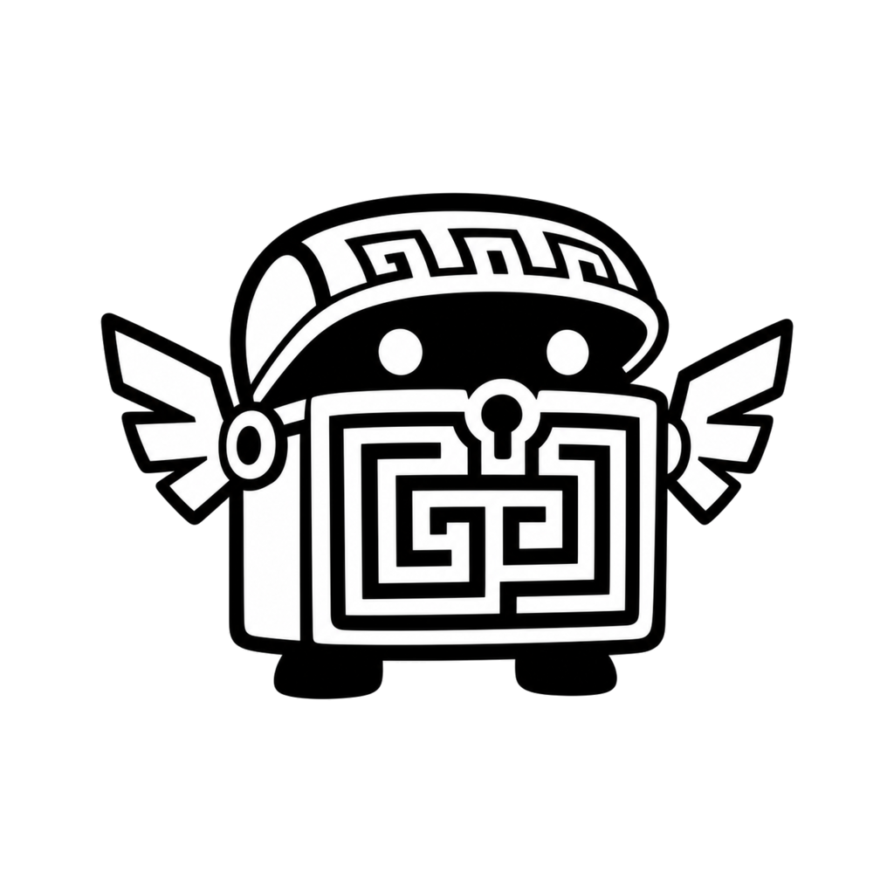

Return to my work after weeks or months.
I keep the intent, current state, decisions, tasks, evidence, and codebase pointers attached, so a dormant project can restart without me reconstructing its history from memory.
Open template · agent skill · workspace

Chats disappear. Research should accumulate.
Archivum is the Git-backed, agent-readable operating system I built to carry my knowledge, projects, research, decisions, and long-horizon work. The files are my memory. My agents are replaceable collaborators.
Decision became an owned action.
Claim, source, inference, and uncertainty separated.
Negative evidence preserved instead of polished away.
The next agent can resume the work.
What it enables
Over the last year, Archivum has been the continuity layer beneath my research, software, writing, planning, and the tools I built to manage them. These are the patterns that survived contact with my actual work.
I keep the intent, current state, decisions, tasks, evidence, and codebase pointers attached, so a dormant project can restart without me reconstructing its history from memory.
I promote ideas, decisions, and unfinished work from chat and message histories into canonical records, rather than preserving another transcript graveyard.
I keep sources, hypotheses, experiments, revisions, contradictory observations, and negative evidence distinct while a research direction changes underneath them.
I move from rough notes and source material to essays, lectures, proposals, and websites while exposing only the public artefact I deliberately selected.
Codex, Claude Code, and Cursor enter through the same bounded orientation surface and leave durable changes that my next collaborator can understand.
I bring my project tasks, reminders, calendar state, and stale-work signals together without turning the archive into a notification machine.
I add search, project health, task aggregation, validation, document ingestion, and local browsing around the files instead of replacing them with another platform.
These are usage patterns, not published records. My personal records, private decisions, unpublished work, and confidential project details remain private.
What persists
Archivum does not pretend an embedding index is memory. It preserves the objects I need to continue my work: sources, hypotheses, contradictory evidence, decisions, project state, owned tasks, experiments, outputs, and the provenance between them.
Agents begin with a small profile, live state, schema, and contract. Everything else is discovered through search.
Observation, proposal, experiment, result, and established fact remain distinct—including null and negative evidence.
My decisions retain their rationale, my tasks retain ownership, and my projects retain the state another human or agent needs next.
I can move between Codex, Claude Code, and Cursor through one tool-neutral contract. No model becomes my database.
Git records how my knowledge and decisions changed, without inventing a proprietary storage layer.
Nothing in my archive grants permission to publish, submit, upload, or send.
The loop
Most AI conversations end as an answer trapped in a transcript. Archivum treats each interaction with my agents as part of a longer process: orient from a small live-state surface, find the canonical record, do the work, preserve its evidence boundaries, and write the changed state back.
Two modes
Archivum is intentionally made from ordinary Markdown, YAML, Git, and small deterministic tools. I use it in two modes: as the workspace an agent opens with me, or as a portable skill I can point at archives I already maintain.
Create a private repository, complete the workspace profile and current state, then open it in Codex, Claude Code, Cursor, or another repository-aware agent.
Create a private Archivum ↗Use the portable Agent Skill with an existing archive. It resolves the intended workspace explicitly, preserves epistemic state, and writes useful work back to durable records.
Inspect the portable skill ↗Lineage
The public template is not a speculative notes-app design. It distils conventions that survived sustained use across my personal, administrative, and research archives, then makes the useful parts portable.
I began the first private Archivum as an LLM-assisted system for my knowledge and projects, built around Markdown, metadata, Git history, and agent readability.
My research and organisational work grew into dedicated archives, forcing clearer boundaries between observations, results, proposals, decisions, and outputs.
I made the reusable template agent-neutral: one contract for Codex, Claude Code, Cursor, deterministic workspace tools, a portable skill, and automated validation.
My archive is the continuity layer.
The template and tooling are public. My personal and research archives remain private; I publish selected outputs as essays on this site.